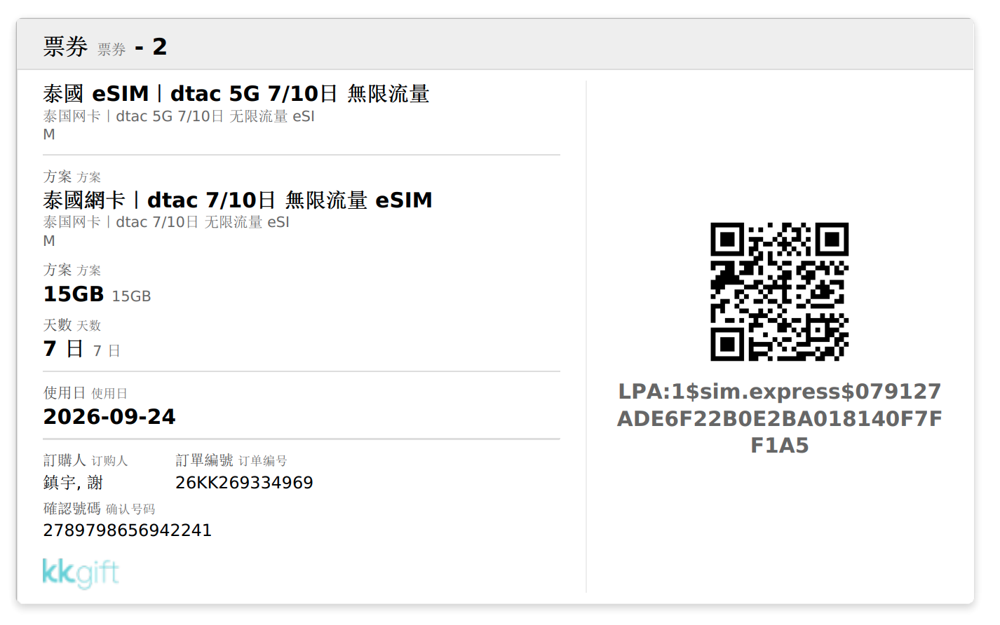
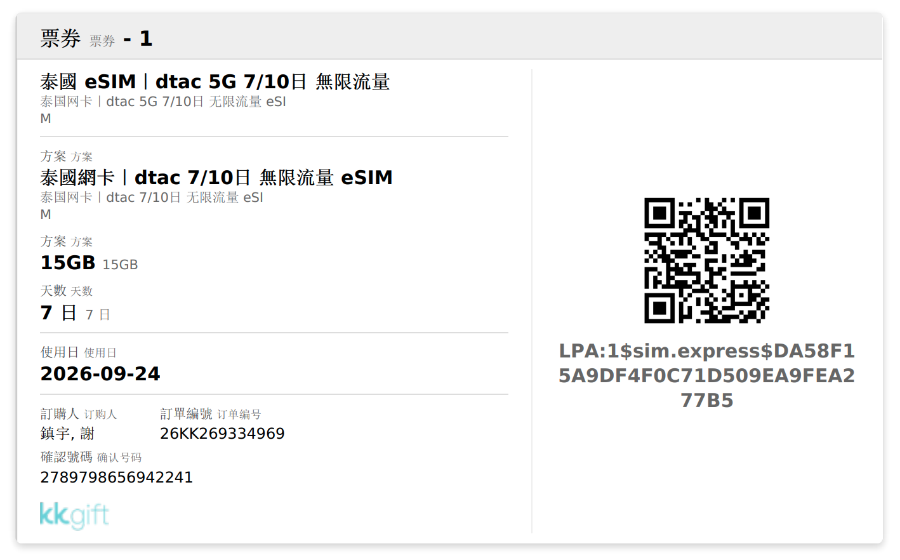

去程 · CHINA AIRLINES CI837 · 2026-09-24
商務艙
TPE桃園國際機場 · 1 航廈
BKK蘇凡納布國際機場
22:409/24 起飛
01:25+19/25 抵達
สวัสดี · กรุงเทพฯ
2026.09.24 – 09.28 ・五天四夜
保留想去的山竹市場，加入雙館體驗、ICONSIAM 與市區歌舞秀。河岸老屋另留彈性方案，依當天道路與營運決定。
查看完整原版行程 ↗ · 雨備規劃更新：2026/09/22 · 所有時間均為曼谷當地時間。
水門市場（Pratunam）鬧區，樓下就是成衣批發商圈，鄰近 Platinum Fashion Mall 與 Big C。
阿宇票券 2
dtac 5G · 15GB · 7 日 · 使用日 2026-09-24

LPA:1$sim.express$079127ADE6F22B0E2BA018140F7FF1A5
阿婷票券 1
dtac 5G · 15GB · 7 日 · 使用日 2026-09-24

LPA:1$sim.express$DA58F15A9DF4F0C71D509EA9FEA277B5
KKday 訂單 26KK269334969 · 確認號碼 2789798656942241。兩張都是 15GB／7 日、啟用日 9/24。建議出發前在台灣先掃 QR Code 安裝（安裝需要網路，落地後沒網路會很麻煩），但先別開啟，到曼谷再把 eSIM 打開即可。QR 只能掃一次，別掃錯人的。
泰國不用辦簽證，但入境卡一定要先在網路上填，而且有時間窗口。以下依急迫度排序。
2025/05 起強制實施，取代舊的紙本 TM6 入境卡。沒填會在海關被擋下來。免費，兩人各填一份。
只能在抵達前 72 小時內填 → 9/22 起開放。建議 9/22–9/23 填掉，留時間改錯。
觀光免簽，不用事先申請。
入境日 9/25 起算，護照要有效到 2027/03/25 之後。現在就翻開來確認，不夠的話補辦來不及。
泰國連持有都違法，不是罰錢了事，最重可判刑，機場確實會查。行李裡有的話出發前就拿出來。
免簽旅客規定每人須備 20,000 泰銖（或家庭 40,000）等值旅費，信用卡與網銀截圖不算。實務上是抽查，但身上放一些現金比較保險。
安裝過程需要網路，落地後沒網路會卡住。QR Code 與安裝碼都在上面的 網卡區塊。裝好先別啟用，到曼谷再打開。
台灣先換一點小額泰銖應急（計程車、路邊攤），大額在曼谷市區匯兌所（如 SuperRich）比機場划算。海外刷卡記得開通。
另建議保旅平險＋不便險；紅眼班機延誤時理賠得上。
在 B1 辦理預辦登機與行李託運服務，須於班機起飛前 3 小時辦妥。
CI837 商務艙可使用華航貴賓室，先吃點東西休息。
即 9/25 凌晨 01:25 抵達 BKK。
路線：水門飯店 → Or Tor Kor → Ari／12:00 Lay Lao → Dusit Central Park → CANNABIS TWINS → 按摩／Silom 晚餐 → 水門飯店。除已訂位項目外，時間均為規劃估算，交通緩衝須依當日路況調整。
抵達後可以走快速通關出境，位置位於泰國本地人驗證區的最右邊（網路訊息）。
出關後下到 1 樓（Level 1），到 Gate 4 叫 Grab。
吃完早餐看要不要再回去睡。
保留完整 1.5 小時逛市場、吃水果與熟食。市場有屋頂但非全封閉，留意地面；11:00 離開，預留一小時前往已訂位的 Lay Lao。水果供應依當天攤商為準。
山竹主場⭐。九月底是季尾（主季 5–8 月，靠南部晚季貨），這裡是最穩的貨源；約 250 THB/kg、是一般市場的 2.5 倍，早上 7–9 點最新鮮。
被譽為泰國最高級的生鮮市場，乾淨明亮、以品質聞名，山竹、榴槤、芒果糯米飯都是頂規版本，就在恰圖恰週末市集對面。
必比登推薦。
Ari 區的實力派，以東北依善料理和海鮮出名、常年入選必比登，順路解決午餐正好。
午餐後預留 1 小時交通與步行緩衝；依當天路況選擇大眾運輸或叫車。
午餐後逛室內商場，停留約 1 小時；屋頂花園從雨備主線移除。
Silom 路口、杜喜天麗飯店原址重建的大型複合開發，2025 年起分階段開幕，商場屋頂的空中綠地可以眺望倫披尼公園，是曼谷最新的打卡點之一。
從 Dusit Central Park 過來預留 30 分鐘交通，店內停留約 30 分鐘；商品供應以現場為準。
先買大麻軟糖。在 Google Maps 開啟 ↗
留意：這類商品多為大麻成分食品。泰國 2025 年起已收緊大麻法規，且相關產品絕對不能帶回台灣（屬毒品重罪），出發前先確認現況。
按摩先抓 1 小時，前站至此留 30 分鐘；若選 2 小時療程，晚餐順延。店家依實際位置與可預約時段二選一。
在按摩店附近吃晚餐，餐後回水門飯店休息。
吃完早餐前往 Siam Discovery，留交通與入場緩衝；海洋世界與蠟像館是不同商場，兩館間另留轉場時間。
新增雙館套票行程，位於 Siam Discovery；預留 1.5 小時拍照參觀。先蠟像館、再海洋世界，部分套票要求先到蠟像館換票，最終依所購方案憑證安排。海洋世界＋蠟像館官方套票 ↗
預留午餐及兩館間移動時間；沿 Siam 商場動線前往 Siam Paragon，跨館仍須留意雨勢。純逛街縮短，保留雙館體驗。
位於 Siam Paragon，預留約 2 小時。與上午蠟像館組成雙館日；套票尚未購買，需確認兩館入場順序、預約時段及是否包含 4D／玻璃船等加購體驗，不能視為全包。官方開放時間 ↗
預留回飯店交通，休息後再出門看秀。若精神很好，可延長 Siam 停留，但不要壓縮赴劇院緩衝。
暫以 18:30 場為目標；安排較寬裕的叫車與報到時間，實際依路況和票券規定調整。劇院在 Ratchadaphisek 18，非飯店步行圈。
市區室內變裝歌舞秀，替代 Asiatique 的 Calypso。官網列每日 17:00／18:30／20:00，演出約 1 小時；9/26 有無座位需另查。官方場次、地址與聯絡方式 ↗ · KKday 訂票 ↗ · Google Maps 導航 ↗
散場後依交通選室內餐廳；出門前先吃點心，避免晚餐太晚。若劇院交通受阻，留在飯店附近吃晚餐，不硬趕場。
Mirinn Show 位於 RCA 一帶，從水門的地理位置看值得優先詢問，但本次未確認旅行日期的現行場次與票況，不當作已可訂的節目。泰國觀光局介紹 ↗。Golden Dome 的官方資訊較明確，因此先作可執行候選；官網票券不可退換，確定日期與交通後再購買。
ICONSIAM 移到週日慢慢逛；Jurassic World、Calypso 與 Asiatique 夜市留在原版，雨備日不與市區秀重複安排。如已另購原版票券，先查改退規則，本頁不代表已取消任何訂單。
上午先逛室內，取消戶外水舞及廣場散步。
保留想吃的午餐。建議預約，尚未確認訂位；用餐時間依現場調整。
交通預留 75 分鐘，以搭車或軌道交通為主，不依賴河岸接駁船。先確認商場營運及進出道路；若啟用老屋方案，改走下方時程。
留完整 4.5 小時逛大型百貨、品牌與美食，下午茶和晚餐都在商場內解決。SookSiam 找水果與泰式小吃，山竹依當天供應；取消河岸露台與戶外散步。ICONSIAM 官網 ↗
預留回飯店交通；道路正常且有精神再採買，需購物可提早離開 ICONSIAM。若啟用老屋方案導致晚歸，Big C 改到週五晚餐後，回程早上不補塞購物。
當日店家確認營業、往返道路無積水或封閉，且沒有影響路線的警示，再加入老屋。雨小不代表道路已退水。
13:15–14:15 搭車前往 → 14:15–15:15 The Corner House 喝咖啡、逛店與拍老屋 → 15:15–16:15 預留前往 ICONSIAM 的交通 → 16:15–20:15 ICONSIAM＋晚餐。兩段車程均為規劃緩衝，若塞車就縮短商場停留，不追趕時程。
原行程記載週一公休，因此保留週日機會；營業時間出發前向店家確認。The Corner House 地圖 ↗。Song Wat、唐人街不列必走，不再額外串長距離散步。
若 ICONSIAM 或老屋的營運、進出道路受影響，午餐後改前往 BACC：13:15–14:15 交通、14:15–16:15 看展，之後回水門喝咖啡、室內晚餐及 Big C 採買。BACC 官方開放週二至週日 10:00–20:00，展期與特殊展票價另確認。官方參觀資訊 ↗
River City 也在河岸一帶，不當作河岸積水時的替代點。ICONSIAM 靠河不代表一定淹水，依當天公告與可通行路線決定。
Big C 週五或週日完成，早上不再安排購物。
請櫃檯確認道路和機場交通；如有積水或長時間塞車，評估前往 Airport Rail Link 車站的可行路線，不保證叫車一定通。
雨備版比原定 10:00 提早一小時，目標 10:00–10:30 到機場；這是預留緩衝，不是車程保證。若當日警示或路況惡化，需更早出發。
依航空公司規定辦理報到、安檢與出境。
18:00 抵達桃園（第 2 航廈）。